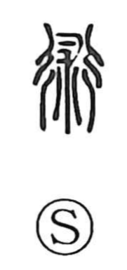

Explanation
術 places 朮 within 行, the road. 行 depicts a crossroads, where many spirits were thought to pass. 朮 represents an animal endowed with spiritual power. The animal was used in rites performed on the road to determine a course of action, including whether an army should advance or withdraw.
The decision and its execution are linked. Related 述 and 遂 concern proceeding in accordance with what has been determined and carrying the action through. The road is therefore both the place of the rite and the route of the ensuing movement.
From an effective ritual procedure come a method, technique, art, or learned skill. 術 also retains uses for a road or passage. Its range joins the place where action is decided with the means of accomplishing it.